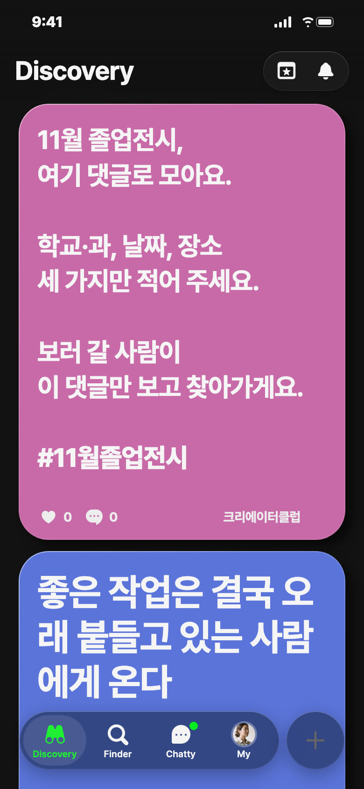
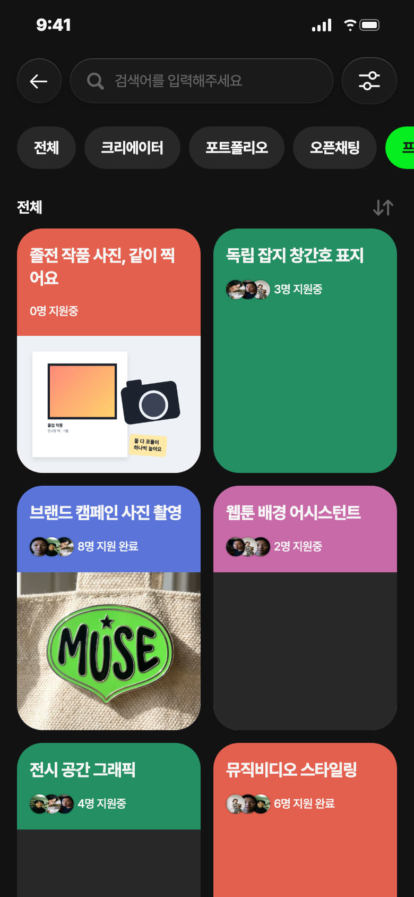
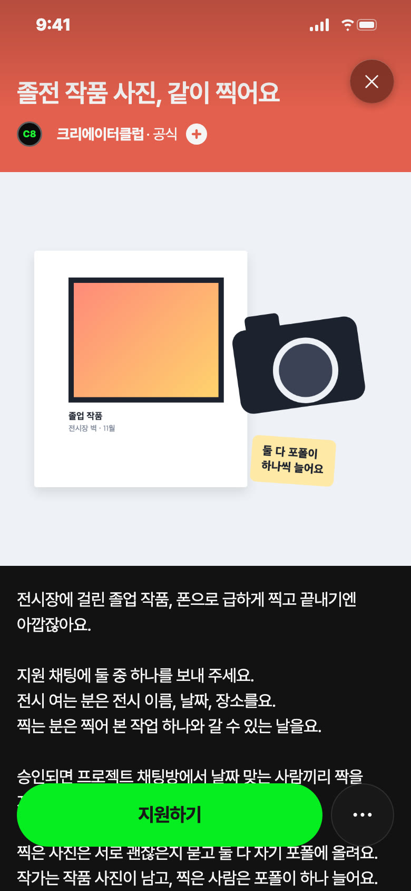
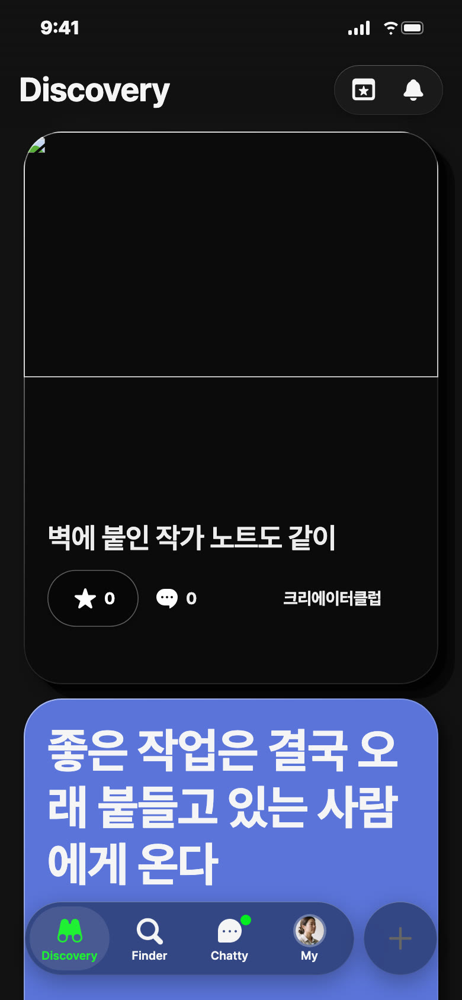
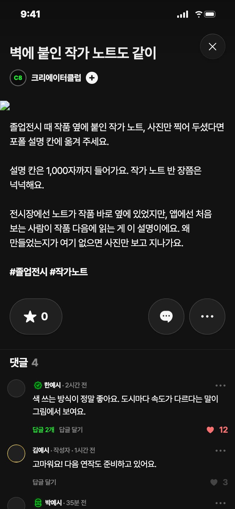

C8 앱 게시 시안 · 11/8(일) — 오늘 추천: 영감 · 오후 7시
오늘 추천 · 영감 · 일 11/8 오후 7시 · 분홍

칸: 잇기 × 판 열기(학교와 행사)
왜 오늘: 11/7 「졸업전시 좋았어」 소재를 운영 없이 댓글만으로 여는 판
보낼 사람: 졸전 준비하는 동기에게 「우리 전시 여기 적자」
받고 싶은 댓글: 「○○대 시각디자인 · 11/13~18 · 본관 1층 전시실」
영감 글
11월 졸업전시, 여기 댓글로 모아요. 학교·과, 날짜, 장소 세 가지만 적어 주세요. 보러 갈 사람이 이 댓글만 보고 찾아가게요. #11월졸업전시
비축 · 프로젝트 · 코랄


칸: 함께 만들기 × 일 받기
왜 비축: 승인·채팅방 지킬 사람이 C8 계정이라 샐리가 정할 것
보낼 사람: 사진 찍는 친구에게 「졸전 사진 찍어 줄 사람 찾는대」
받고 싶은 지원 채팅: 「11/20~23 영상과 상영회요. 상영관 사진이 하나도 없어요」
제목
졸전 작품 사진, 같이 찍어요
카테고리
사진
모집 내용
이번 달 졸업전시를 여는 회원, 사진·영상 찍는 회원 · 11/9~11/30 · 상품 없음
설명
전시장에 걸린 졸업 작품, 폰으로 급하게 찍고 끝내기엔 아깝잖아요. 지원 채팅에 둘 중 하나를 보내 주세요. 전시 여는 분은 전시 이름, 날짜, 장소를요. 찍는 분은 찍어 본 작업 하나와 갈 수 있는 날을요. 승인되면 프로젝트 채팅방에서 날짜 맞는 사람끼리 짝을 지어요. 찍은 사진은 서로 괜찮은지 묻고 둘 다 자기 포폴에 올려요. 작가는 작품 사진이 남고, 찍은 사람은 포폴이 하나 늘어요.
비축 · 포트폴리오


칸: 보여 주기 × 쓸모
근거: 포폴 설명 1,000자·해시태그 가능(기준 문서 세 타입 표, 10/27 iOS 코드 확인)
왜 비축: 일요일 1순위는 영감, 화요일은 설명서 연재 자리
보낼 사람: 졸전 끝낸 동기에게 「작가 노트 버리지 말고 여기 넣어」
받고 싶은 댓글: 부탁 안 함
제목
벽에 붙인 작가 노트도 같이
설명
졸업전시 때 작품 옆에 붙인 작가 노트, 사진만 찍어 두셨다면 포폴 설명 칸에 옮겨 주세요. 설명 칸은 1,000자까지 들어가요. 작가 노트 반 장쯤은 넉넉해요. 전시장에선 노트가 작품 바로 옆에 있었지만, 앱에선 처음 보는 사람이 작품 다음에 읽는 게 이 설명이에요. 왜 만들었는지가 여기 없으면 사진만 보고 지나가요. #졸업전시 #작가노트